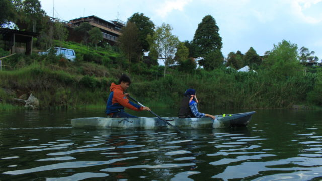
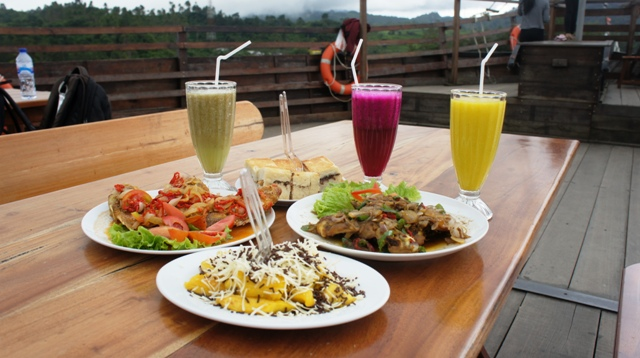

Berkemah kini tidak harus bersusah payah dan merepotkan pelakunya. Saat ini, ada cara kemah baru bernama GLAMPING (Glamorous Camping). Lokasi perkemahan yang menyediakan kemah glamor ada di Glamping Lakeside Rancabali, Ciwidey, Bandung.Glamping menawarkan kemah simpel, tidak ribet, namun tetap menyajikan esensi kemah itu sendiri. Wisatawan hanya perlu membayar biaya glamping, tidak perlu membawa perlengkapan kemah. Karena, sudah disediakan oleh pengelola, termasuk juga disediakan listrik, kamar mandi, dan konsumsi.
Harga Tiket Glamping Laukside
| Tiket Masuk | Rp.25.000 |
| Teras Bintang | Rp.20.000 |
| Golesat Circuit | Rp.50.000 |
| Phinisi View Point | Rp.20.000 |
| Tamana Kelinci | Rp.20.000 |
| Floating Lake Bridge | Rp.25.000 |
| Parkir Motor | Rp.5000 |
| Perahu Danau | Rp.25.000 |
| Paket All In Wisata Glamping Lakeside | Rp.75.000/pax |
Jam buka Glamping Lakeside
Glamping Lakeside Rancabali buka setiap hari mulai pukul 09.00-17.00. Pengunjung juga akan dilayani oleh pengelola kapan pun dibutuhkan. Untuk jadwal check in diutamakan pukul 14.00 dan check out pukul 12.00 WIB.Daya Tarik Glamping Lakeside Rancabali
1. Keindahan Area Glamping Lakeside Rancabali
Berada di lingkungan pegunungan dengan danau alam yang menjadi pemanis pemandangan. Situ Patenggang, danau yang menjadi lokasi didirikannya tenda – tenda glamping ini. Udara sejuk akan menemani pengunjung selama bermalam di sini.Lokasi perkemahan dikelilingi oleh kebun teh yang indah. Ditambah lagi pemandangan Gunung Patuha dan Situ Patenggang yang luar biasa. Saat pagi hari, pengunjung akan menyaksikan pemandangan indah kabut yang menutupi Situ Patenggang.
2. Wahana Permainan di Glamping Lakeside Rancabali

Pengelola Tent Resort telah menyediakan berbagai wahana permainan yang seru. Diantaranya rafting, off road, serta area paintball. Pengunjung bisa bersenang – senang dengan bermain bersama teman atau keluarga.Jika ingin wisata yang lebih santai namun tetap menyenangkan, ada wisata lainnya. Yaitu wisata petik stroberi serta tea walking. Menikmati suasana sejuk sambil memetik buah stroberi atau teh.
3. Wisata Kuliner di Pinisi Resto
Spot yang paling menarik di Rancabali adalah spot Kapal Pinisi. Kapal Pinisi ini didatangkan langsung dari Sulawesi, yang bentuknya mirip dengan kapal asli. Kapal ini seolah sedang berlabuh di hamparan perkebunan teh nan hijau.Di kapal kayu ini, dilengkapi dengan berbagai atribut kapal sungguhan. Seperti peralatan navigasi, hingga perlengkapan keselamatan yaitu pelampung. Spot favorit berfoto wisatawan yaitu di haluan kapal.Dari haluan kapal, pengunjung dapat menyaksikan pemandangan Situ Patenggang yang sangat indah. Di sini, menyajikan menu yang beraneka macam. Mulai dari menu masakan Sunda, Indonesia, hingga menu Eropa.
Lokasi Dan Kontak Glamping Lakeside Rancabali
Glamping Lakeside beralamat di Jl. Situ Patengan, Rancabali, Bandung. Untung informasi lebih lanjut dapat menghubungi 0821-8002-8888, 08122-161-8888, 0821-2933-4113. Atau follow akun Instagram @lakeside_rancabali.